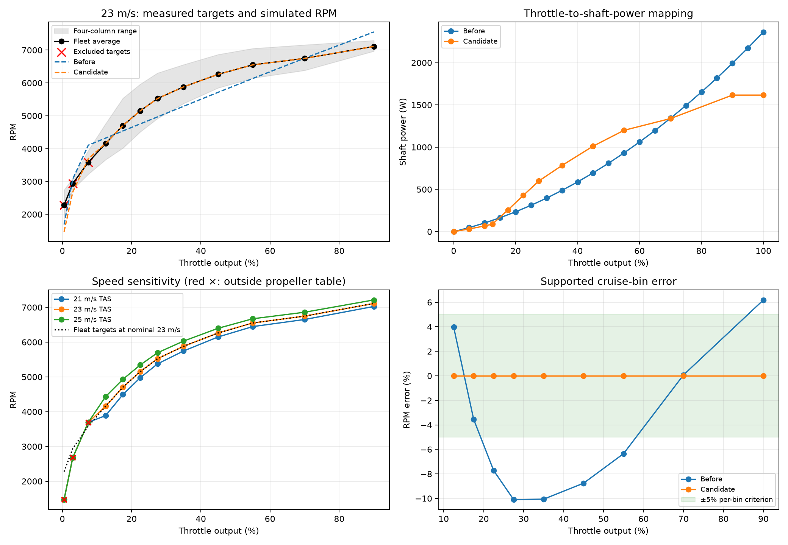
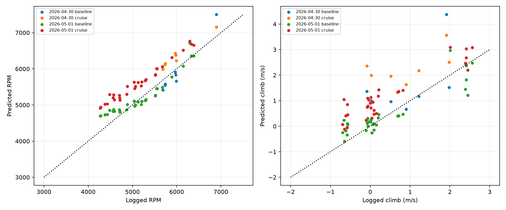
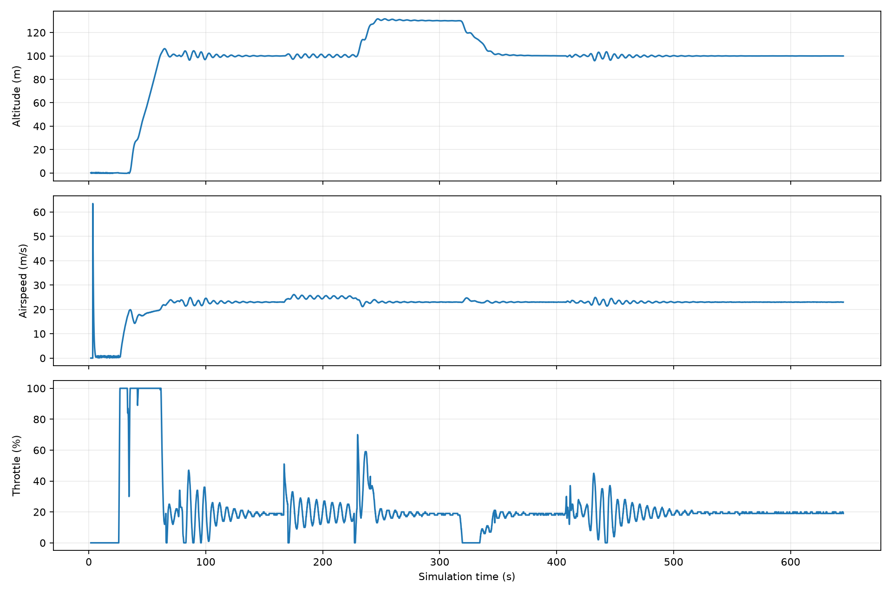

Result: Accepted: fleet cruise model is the default.
Four columns have equal weight. Targets use throttle-bin midpoints; the unknown per-bin sample counts and statistic prevent statistical confidence claims. Both yellow configurations count as separate columns.
Reference: 23 m/s provisional TAS, density 1.1396 kg/m³ from May 1 windows. Engine RPM is assumed equal to propeller RPM. Supported nominal-bin RMS relative error: 0.000%; maximum absolute error: 0.000%. These are fit-point consistency checks, not independent accuracy estimates: the power table was constructed from these same targets.

Both models are scored on the same supported windows. These logs are not independent fleet validation: aircraft identity and overlap with spreadsheet data are unknown. April 30 was held out from the original log fit. Review any increase in error as a tradeoff of replacing that aircraft/day fit with a fleet mean.
| date | model | common_windows | rpm_rmse | climb_rmse_mps |
|---|---|---|---|---|
| 2026-04-30 | baseline | 7 | 303.38 | 1.17 |
| 2026-04-30 | cruise | 7 | 359.29 | 1.53 |
| 2026-05-01 | baseline | 31 | 219.02 | 0.46 |
| 2026-05-01 | cruise | 31 | 503.82 | 0.84 |

Last 20 seconds of each commanded hold. Airspeed here is simulator telemetry EAS; the propulsion bench uses TAS.
| mission_seq | altitude_target_m | altitude_mean_m | airspeed_target_mps | airspeed_mean_mps | throttle_mean_pct |
|---|---|---|---|---|---|
| 3 | 100 | 100.01 | 23 | 23.00 | 18.67 |
| 5 | 100 | 100.00 | 25 | 25.01 | 19.48 |
| 7 | 130 | 130.09 | 23 | 23.00 | 18.64 |
| 8 | 100 | 100.14 | 23 | 23.00 | 18.55 |
| 9 | 100 | 99.93 | 23 | 23.01 | 19.32 |

The trace retains startup telemetry, including the brief pre-takeoff airspeed spike. Throttle and airspeed oscillations follow takeoff, speed changes, and the turn reversal; they settle before the acceptance windows. Passing these steady-hold checks does not validate transient engine response. Controller gains were not retuned.
| thr_bin | rpm_mean | rpm_min | rpm_max | supported | candidate_rpm | error_pct |
|---|---|---|---|---|---|---|
| 0-1 | 2281.25 | 1856.00 | 2745.00 | False | 1473.16 | -35.42 |
| 1-5 | 2934.75 | 2760.00 | 3098.00 | False | 2677.10 | -8.78 |
| 5-10 | 3586.00 | 3223.00 | 3946.00 | False | 3695.55 | 3.06 |
| 10-15 | 4156.25 | 3663.00 | 4760.00 | True | 4156.25 | -0.00 |
| 15-20 | 4705.75 | 4019.00 | 5536.00 | True | 4705.75 | -0.00 |
| 20-25 | 5151.75 | 4510.00 | 5964.00 | True | 5151.75 | -0.00 |
| 25-30 | 5525.25 | 4917.00 | 6303.00 | True | 5525.25 | -0.00 |
| 30-40 | 5880.00 | 5374.00 | 6557.00 | True | 5880.00 | -0.00 |
| 40-50 | 6263.50 | 5849.00 | 6867.00 | True | 6263.50 | -0.00 |
| 50-60 | 6551.00 | 6148.00 | 7050.00 | True | 6551.00 | -0.00 |
| 60-80 | 6748.50 | 6383.00 | 7160.00 | True | 6748.50 | -0.00 |
| 80-100 | 7111.75 | 6968.00 | 7294.00 | True | 7111.75 | -0.00 |
{
"rms_error_pct": 3.9717855972636026e-06,
"max_error_pct": 4.848786971933805e-06,
"all_sweep_points_converged": true,
"fit_pass": true,
"sitl_completed": true,
"pipeline_checks_pass": true,
"run_dir": "runtime/cruise_fleet_validation",
"reference_density_altitude_ft": 2449.695302100491,
"decision": "Accepted: fleet cruise model is the default.",
"settled_phases": [
{
"mission_seq": 3,
"altitude_target_m": 100,
"altitude_mean_m": 100.01243500000001,
"airspeed_target_mps": 23,
"airspeed_mean_mps": 22.996672315597536,
"throttle_mean_pct": 18.67
},
{
"mission_seq": 5,
"altitude_target_m": 100,
"altitude_mean_m": 100.004885,
"airspeed_target_mps": 25,
"airspeed_mean_mps": 25.01047510147095,
"throttle_mean_pct": 19.48
},
{
"mission_seq": 7,
"altitude_target_m": 130,
"altitude_mean_m": 130.09365999999997,
"airspeed_target_mps": 23,
"airspeed_mean_mps": 23.004818868637084,
"throttle_mean_pct": 18.645
},
{
"mission_seq": 8,
"altitude_target_m": 100,
"altitude_mean_m": 100.14179,
"airspeed_target_mps": 23,
"airspeed_mean_mps": 22.99576313018799,
"throttle_mean_pct": 18.55
},
{
"mission_seq": 9,
"altitude_target_m": 100,
"altitude_mean_m": 99.931135,
"airspeed_target_mps": 23,
"airspeed_mean_mps": 23.00937252998352,
"throttle_mean_pct": 19.315
}
],
"log_metrics": [
{
"date": "2026-04-30",
"model": "baseline",
"common_windows": 7,
"rpm_rmse": 303.38170061099225,
"climb_rmse_mps": 1.1689580268047617
},
{
"date": "2026-04-30",
"model": "cruise",
"common_windows": 7,
"rpm_rmse": 359.28963088394937,
"climb_rmse_mps": 1.5311253729883267
},
{
"date": "2026-05-01",
"model": "baseline",
"common_windows": 31,
"rpm_rmse": 219.01740081119442,
"climb_rmse_mps": 0.4645445749723177
},
{
"date": "2026-05-01",
"model": "cruise",
"common_windows": 31,
"rpm_rmse": 503.823978729513,
"climb_rmse_mps": 0.8384076474107622
}
]
}
Reproduce with MPLCONFIGDIR=/tmp/tiguar-mpl python3 scripts/cruise_calibration.py. Validation uses the actual rotor inertia and 1 ms time steps in a stationary-airframe headwind bench. Each throttle point must settle to less than 0.1 RPM change for two consecutive one-second intervals, within 30 seconds.
Data: fleet targets, propulsion sweep, log predictions, validation, pipeline checks.